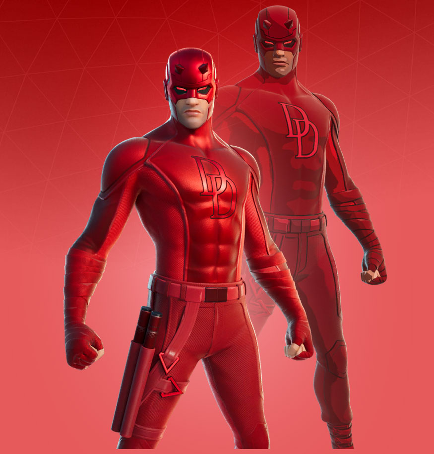

In Daredevil,the main character, Matt Murdock, struggles with his weakness of being blind. In the beginning of the show, a young Murdock pushes an old man out of the way from an oncoming truck. In the process, Murdock ends up blind. At first, he hated being blind because of the pain, but later learns to cope with his blindness by learning braille, as well as how to use his blindness to his advantage through fighting.
